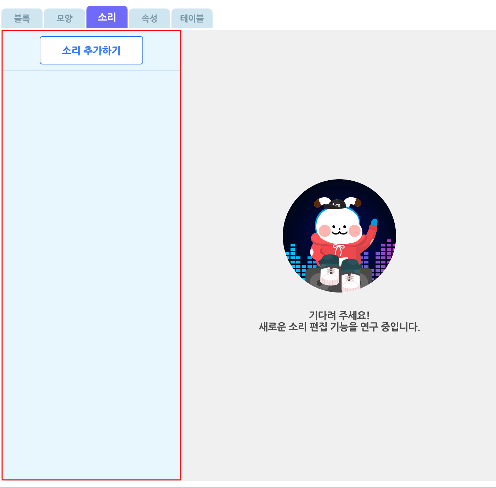
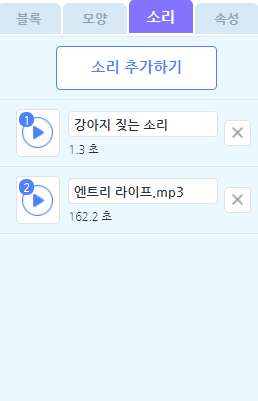
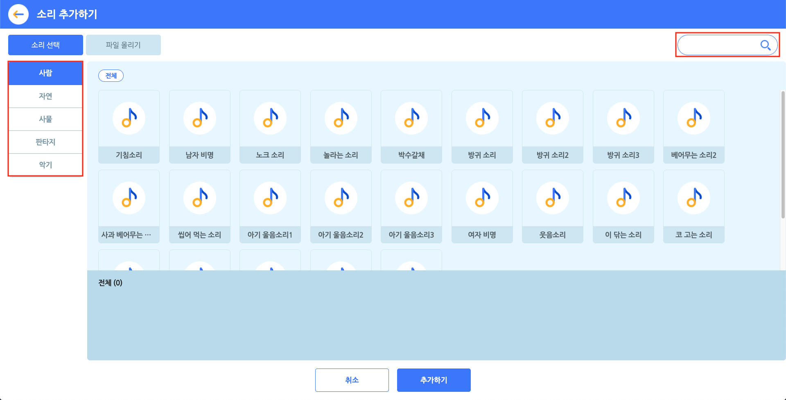
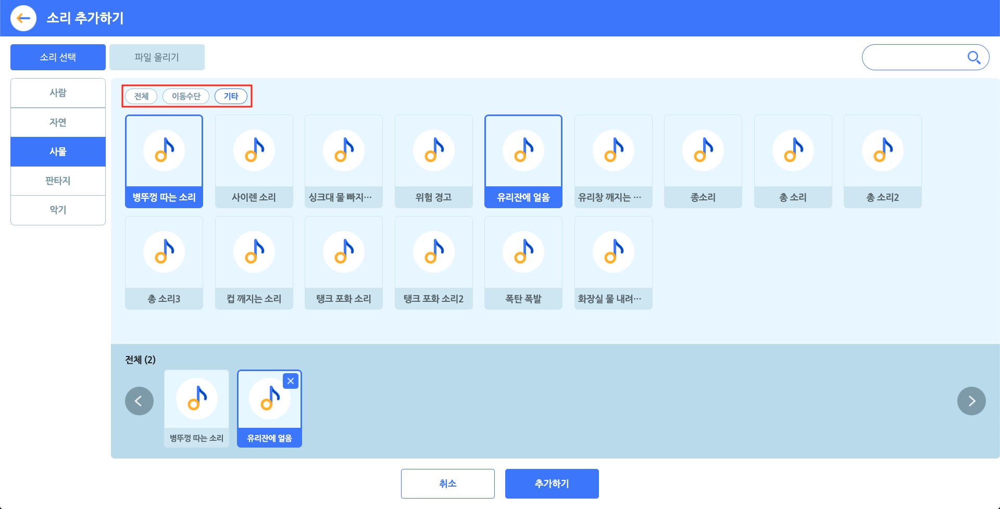
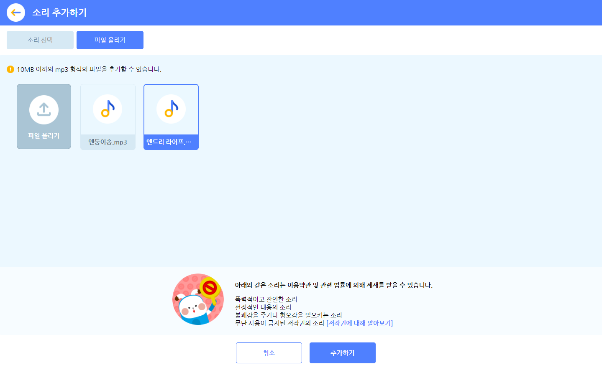

작품
- 시작하기
- 작품
화면의 구성 요소
- 상단 메뉴
- 실행 화면
- 보조 창
- 블록 탭
- 모양 탭
- 소리 탭
- 속성 탭
- 기타
블록
- 시작 블록
- 흐름 블록
- 움직임 블록
- 생김새 블록
- 붓 블록
- 글상자 블록
- 소리 블록
- 판단 블록
- 계산 블록
- 자료 블록
- 함수 블록
- 데이터 분석 블록
- 인공지능 블록 > 인공지능이란?
- 인공지능 블록 > AI 활용 - 번역
- 인공지능 블록 > AI 활용 - 읽어주기
- 인공지능 블록 > AI 활용 - 오디오 감지
- 인공지능 블록 > AI 활용 - 비디오 감지
- 인공지능 블록 > 모델 학습이란?
- 인공지능 블록 > 분류 모델 - 이미지
- 인공지능 블록 > 분류 모델 - 텍스트
- 인공지능 블록 > 분류 모델 - 음성
- 인공지능 블록 > 분류 모델 - 숫자
- 인공지능 블록 > 예측 모델 - 숫자
- 인공지능 블록 > 군집 모델 - 숫자
- 하드웨어 블록
- 확장 블록
소리 탭
소리 목록
오브젝트에 소리를 추가 또는 관리하는 영역입니다.
모든 오브젝트에는 하나의 소리 목록이 있어요. ‘소리 추가하기’ 버튼을 통해 원하는 소리를 이 목록에 추가할 수 있습니다.
소리 목록에 추가한 소리는 소리 블록을 통해 재생할 수 있습니다.

이름 상자를 클릭해서 이름을 수정합니다.
오른쪽의 X 버튼을 클릭해서 삭제합니다.
왼쪽의 재생 아이콘을 클릭해서 재생합니다.
왼쪽의 재생 아이콘을 드래그해서 소리 목록의 순서를 바꿉니다.
소리를 마우스 우클릭하면 이름 수정, 복제, 삭제, PC에 저장이 가능합니다.
선택한 소리를 편집하는 영역
소리 편집 기능은 아직 준비되지 않았어요. 멋진 업데이트로 찾아올 테니, 기대해주실 거죠?
소리 추가 팝업

‘소리 추가하기’ 버튼을 클릭하면 나타나는 팝업 창입니다.
소리를 선택하고, 아래의 ‘추가하기’ 버튼을 클릭하면 소리 목록에 추가할 수 있어요.
오른쪽 위의 검색창을 통해 원하는 소리의 이름을 검색할 수 있어요. 왼쪽의 카테고리를 선택하면 원하는 소리를 더 쉽게 찾을 수 있습니다.
① 소리 선택

원하는 소리를 클릭해서 선택합니다. 중복 선택이 가능해요. 선택한 소리는 아래의 선택 목록 영역에서 볼 수 있어요.
선택한 소리를 다시 클릭하거나, 선택 목록의 소리에 마우스 포인터를 가져갔을 때 나타나는 X 표시를 눌러 선택을 해제할 수 있습니다.
일부 카테고리의 소리는 태그로 분류되어 상단의 태그를 선택하면 원하는 소리를 더 쉽게 찾을 수 있습니다.
② 파일 올리기

원하는 소리를 직접 올릴 수도 있어요.
소리 파일의 용량은 10MB 이하여야 하고, mp3 형식(확장자)를 지원합니다.
올린 소리는 파일 올리기 목록에서 볼 수 있습니다. 선택한 소리만 소리 목록에 추가됩니다. 파일을 올리면 기본적으로 선택한 상태가 되니 유의해 주세요.
아래와 같은 소리는 이용약관 및 관련 법률에 의해 제재를 받을 수 있습니다.
- 폭력적이고 잔인한 소리
- 선정적인 내용의 소리
- 불쾌감을 주거나 혐오감을 일으키는 소리
- 무단 사용이 금지된 저작권의 소리 [저작권에 대해 알아보기]